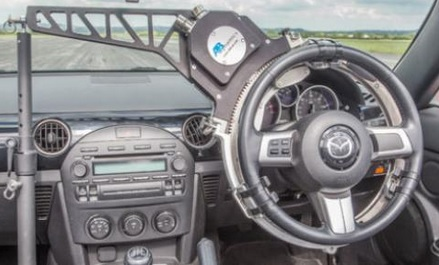
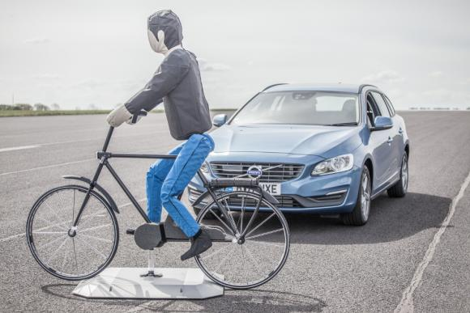
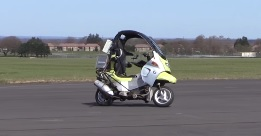

|
 previous / next column previous / next column
A PHYSICIST WRITES . . .
(March 2019)
I want to tell you about a small manufacturing company, AB Dynamics, located in Bradford-on-Avon, which you won't have heard of (the company, I mean). Though first I must declare an interest: after many years working for them as an engineer, my nephew Jeremy is the newly promoted Sales Director! But he and his team won't be cold-calling you, as you wouldn't want to buy anything that they make. Instead, their customers are test authorities, car-assessment laboratories, and vehicle manufacturers around the world.
ABD's wide range of products for this market fall roughly into two groups: laboratory and track. The laboratory items include a driving simulator that can be tweaked to reproduce changes to the configuration of a vehicle as it's being developed, and various machines for assisting with the optimizing of steering and suspension systems. But it's the track category that is really eye-catching.
The star item is the ABD Driving Robot, a mechanism that connects to the steering and pedals of any car, and which can be programmed to direct the vehicle repeatedly along the same path (on a test track) or else with repeatable wheel and pedal movements, so that (again) different configurations can be compared. This is just one example of several ABD robot designs:

Alternatively, any number of vehicles can be put through identical test runs by means of a robot. Or, perhaps most importantly, a car can be sent out on 'hazardous manoeuvres' without any risk to a human driver. The first robot was sold 22 years ago and is still doing its job - and last month, a national vehicle research and testing laboratory in Michigan was presented by Jeremy with ABD's 1000th robot!
A growing section of their products for use on test tracks relates to driverless vehicles (which I shall call simply autos, as always: one day the world will catch on to this term!) and, more generally, cars that have collision-avoidance systems. As far as I know, most of the major vehicle manufacturers are developing autos, in spite of setbacks like the accident I discussed in my January column. But how do you safely test your auto's ability to detect and respond to the wide variety of moving obstacles that it might encounter? Part of the answer, at least, is to use soft robotic 'targets' that won't damage your test vehicle if there is a collision.
And so ABD will supply you with realistic-looking (that's as seen by an auto's detection system) dummy cars, bicycles-and-riders and pedestrians, each capable of being moved across the path of your vehicle under test, and exactly synchronized with it for creating the maximum 'danger' that it must respond to - though if it fails in this, no actual harm or damage will be done. Test authorities can assess vehicles that have been submitted to them for approval, in the same way.

One of the latest ideas from ABD is the driverless motorbike! Not so much for transporting from A to B people who are brave enough to be balanced on two robot-controlled wheels, more for the safe testing of how autos react to bikes generally: they are probably the hardest sort of traffic for autos to cope with, being likely to overtake at speed on either side, and to change lanes rapidly (no offence intended to my bike-riding readers). Like the soft targets I described above, they can be synchronized with the movement of the vehicle under test.

If you are interested to read more about all this technology that's aiding the development of the vehicles of the future, take a look at the home page of ABD, www.abdynamics.com, and follow some of the links. And here, www.youtube.com/user/abdynamics/videos, you will find many videos demonstrating the variety and versatility of the AB Dynamics product range.
- - - - - - -
For various reasons, this will be my last column in these pages [of the Thames Valley Group Newsletter]. When I wrote the first one, in July 2002, who would have thought that I would reach No 167 - certainly not me! Now that I've decided to call it a day, who will step forward to give us their own views on matters motorist, in my place, not necessarily for a decade or more like me, but for a few months perhaps, to allow yourself some 'continuity'? I'm sure the space on the page would suit someone in our group.
In the early days, my idea was to explain some simple physics (I am, after all, just a simple physicist): how cat's-eyes work, why you are 'accelerating' even when going round a bend at a steady speed, how our nearby motorway can be sometimes silent, sometimes deafening, and so forth. Then I started to look at topics that I knew rather less about, hence I had to enlighten myself about them before passing the illumination on to you: tyres, black ice, the supplying of fuel to the pumps, the routes (and labelling) of the great trunk roads and their companion motorways...
I also couldn't resist going right off-topic sometimes (I mean away from driving-related matters), giving you some mild lessons in French, or presenting you with stereoscopic pairs of photos, or writing about litter-picking, bicycle-riding, the Olympics and Paralympics, harmonization of electricity-supply voltages, cancer, children's education, the chances that life exists on distant planets, or walking holidays - though here I was at least trying to draw parallels with touring by car.
On some of these (and other) subjects, again I had to do my homework before starting to type. But more than anything else, it was the inner workings of the brain that fascinated me, as I first learned and then wrote about them. Without doubt, our brains are the most complex objects in the universe (unless of course there is even more superior life elsewhere!) and are the 'enablers' of all that we do. Though one thing we can't do is sense or feel what is going on in our own brains. Nor does a look inside (during an operation, for instance) give a clue.
Nevertheless, what has been discovered is astonishing. Here's an example that I've described before: in the processing of what you see, the image captured by each eye is completely disassembled into edges, colours, contours, moving parts and so on. These details are then combined again so that the brain can identify (subconsciously) the things you are looking at - before you are aware of them yourself, even.
Only at this point is the information from the two eyes compared, to give you your 3D view of the world. Yet this 'view' is entirely imaginary: there are no screens or eyes inside the brain! Also, much of the scene is being continuously invented there, to help you interpret (sometimes wrongly) what you are seeing.
The situation is similar, though less intricate, with the other senses: hearing, taste, smell, touch and so on. But what is hardest to grasp is that in the brain all senses exist only as electrical and chemical signals between neuron cells. Our entire sensing of what is around us consists of generating and assessing these signals.
Over the years, as I absorbed this extraordinary picture of how our brains work, I came to realize that the world - our Earth, and our surroundings on it - exists in two quite different forms. Objectively, it has a solid past and future, which stretch billions of years in each direction. It obeys the laws of physics, and has been the vehicle for an incredible story of evolution of species. Our human species has colonized most of it (for better or for worse) with a complex society.
The other world is a subjective one in each of our heads, created and 'observed' entirely within the brain as I've tried to explain above, and yet appearing to us to be the real thing! And in many ways it's a fair representation of it. Even so, we are subject to all sorts of illusions, both sensory ones and in our interpretation of what's going on around us generally. Hence, I suppose, the arguments that people get into about the state of the nation and what should be done about it!
Our subjective worlds have distinct limitations: we have no memory from before we were a few years old, we can see only a certain distance (unless looking upward), and telling what the future will bring is often pure guesswork. But we can take in much additional information (from reading, looking, and listening to others), and the richness of conversation when we exchange views is further evidence that the world we see within our brains is both unique and special, for each of us.
After my parents died (my father at 92, my mother at very nearly 107), I think I grieved just as much for the snuffing out of their own 'internal worlds' as for the sudden absence of their physical persons. We are told to encourage our parents (or grandparents) to recount to us all they can about their lives, before it's too late, but that is something I didn't think to do, or not enough anyway, to my regret. As for my own life, I believe I've written about it, here and elsewhere, more than most people who haven't actually penned an autobiography! Which is a start...
That last word reminds me that as we lose close family, so we gain them. I'm thinking of my nephew Jeremy's first child, a daughter aged seven months, and already able to stand on her own two feet (if she is carefully placed in that position)! OK, sadly she won't retain memories of her experiences over the next few years, but from then on her internal world will start to fill properly, and will stay with her for a lifetime. On this positive note, I say thank you and farewell to my readers.
Peter Soul
previous / next column
|